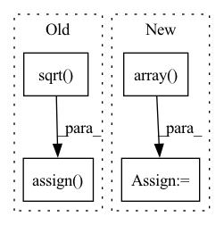

Pattern ID :2117

Before Change
source_tt = source_layer.bb // layer
num_heads = source_tt.shape[0]
source_query_hh = source_query_ww = int(tf.math.sqrt(float(source_tt.shape[1]))) // assume source weights are all square shape
source_kv_hh = source_kv_ww = int(tf.math.sqrt(float(source_tt.shape[2]))) // assume source weights are all square shape
tt = tf.reshape(source_tt, [num_heads, source_query_hh, source_query_ww, source_kv_hh * source_kv_ww]) // resize on query dimension first
tt = tf.image.resize(tt, [self.query_hh, self.query_ww], method=method) // [num_heads, self.query_hh, self.query_ww, source_kv_hh * source_kv_ww]
tt = tf.reshape(tt, [num_heads, self.query_hh * self.query_ww, source_kv_hh, source_kv_ww]) // resize on key_value dimension
tt = tf.transpose(tt, [0, 2, 3, 1]) // [num_heads, source_kv_hh, source_kv_ww, self.query_hh * self.query_ww]
tt = tf.image.resize(tt, [self.kv_hh, self.kv_ww], method=method) // [num_heads, self.kv_hh, self.kv_ww, self.query_hh * self.query_ww]
tt = tf.reshape(tt, [num_heads, self.kv_hh * self.kv_ww, self.query_hh * self.query_ww])
tt = tf.transpose(tt, [0, 2, 1]) // [num_heads, self.query_hh * self.query_ww, self.kv_hh * self.kv_ww]
self.bb.assign(tt)
def light_mhsa_with_multi_head_relative_position_embedding(
inputs, num_heads=4, key_dim=0, sr_ratio=1, qkv_bias=False, pos_emb=None, use_bn=False, out_shape=None, out_weight=True, out_bias=False, dropout=0, name=""
After Change
// source_tt = source_layer["pos_emb:0"] // weights
else:
source_tt = source_layer.bb // layer
source_tt = np.array(source_tt.detach() if hasattr(source_tt, "detach") else source_tt)
num_heads = source_tt.shape[0]
source_query_hh = source_query_ww = int(float(source_tt.shape[1]) ** 0.5) // assume source weights are all square shape
source_kv_hh = source_kv_ww = int(float(source_tt.shape[2]) ** 0.5) // assume source weights are all square shape
In pattern: SUPERPATTERN
Frequency: 3
Non-data size: 4
Instances
Fragment ID: 9098586
Project Name: leondgarse/keras_cv_attention_models
Commit Name: 2ba27b0132168f3590dd4b3bead9edc15a70ba7d
Time: 2023-02-11
Author: leondgarse@gmail.com
File Name: keras_cv_attention_models/cmt/cmt.py
M Class Name: BiasPositionalEmbedding
N Class Name: BiasPositionalEmbedding
M Method Name: load_resized_weights(3)
N Method Name: load_resized_weights(3)
M Parent Class: layers.Layer
N Parent Class: keras.layers.Layer
M File Name: keras_cv_attention_models/cmt/cmt.py
N File Name: keras_cv_attention_models/cmt/cmt.py
M Start Line: 59
M End Line: 74
N Start Line: 61
N End Line: 79
'>
Before Change
else:
source_tt = source_layer.relative_position_bias_table // layer
// self.relative_position_bias_table.assign(tf.transpose(source_tt))
hh = ww = int(tf.math.sqrt(float(source_tt.shape[1] - self.cls_token_pos_len))) // assume source weights are all square shape
num_heads = source_tt.shape[0]
ss = tf.reshape(source_tt[:, : hh * ww], (num_heads, hh, ww)) // [num_heads, hh, ww]
ss = tf.transpose(ss, [1, 2, 0]) // [hh, ww, num_heads]
if self.attn_height == -1:
target_hh = target_ww = int(tf.math.sqrt(float(self.relative_position_bias_table.shape[1] - self.cls_token_pos_len)))
else:
target_hh = 2 * self.attn_height - 1
target_ww = int(float(self.relative_position_bias_table.shape[1] - self.cls_token_pos_len) / target_hh)
tt = tf.image.resize(ss, [target_hh, target_ww], method=method) // [target_hh, target_ww, num_heads]
tt = tf.reshape(tt, (tt.shape[0] * tt.shape[1], num_heads)) // [target_hh * target_ww, num_heads]
tt = tf.transpose(tt) // [num_heads, target_hh * target_ww]
if self.with_cls_token:
tt = tf.concat([tt, source_tt[:, -self.cls_token_pos_len :]], axis=1)
self.relative_position_bias_table.assign(tt)
def show_pos_emb(self, rows=1, base_size=2):
import matplotlib.pyplot as plt
After Change
// source_tt = source_layer["pos_emb:0"] // weights
else:
source_tt = source_layer.get_weights()[0] // layer
source_tt = np.array(source_tt)
// self.relative_position_bias_table.assign(tf.transpose(source_tt))
hh = ww = int(float(source_tt.shape[1] - self.cls_token_pos_len) ** 0.5) // assume source weights are all square shape
num_heads = source_tt.shape[0]
ss = source_tt[:, : hh * ww].reshape((num_heads, hh, ww)) // [num_heads, hh, ww]
'>
Fragment ID: 9098587
Project Name: leondgarse/keras_cv_attention_models
Commit Name: 1aa29dc686f862bc1ff66a11700fa8ef16bd2b8a
Time: 2023-02-03
Author: leondgarse@gmail.com
File Name: keras_cv_attention_models/beit/beit.py
M Class Name: MultiHeadRelativePositionalEmbedding
N Class Name: MultiHeadRelativePositionalEmbedding
M Method Name: load_resized_weights(3)
N Method Name: load_resized_weights(3)
M Parent Class: layers.Layer
N Parent Class: keras.layers.Layer
M File Name: keras_cv_attention_models/beit/beit.py
N File Name: keras_cv_attention_models/beit/beit.py
M Start Line: 101
M End Line: 121
N Start Line: 104
N End Line: 124
'>
Before Change
source_bb = source_layer["positional_embedding:0"] // weights
else:
source_bb = source_layer.bb // layer
hh = ww = int(tf.math.sqrt(float(source_bb.shape[0])))
ss = tf.reshape(source_bb, (hh, ww, source_bb.shape[-1])) // [hh, ww, num_heads]
// target_hh = target_ww = int(tf.math.sqrt(float(self.bb.shape[0])))
tt = tf.image.resize(ss, [self.k_blocks_h, self.k_blocks_w], method=method) // [target_hh, target_ww, num_heads]
tt = tf.reshape(tt, (self.bb.shape)) // [target_hh * target_ww, num_heads]
self.bb.assign(tt)
def show_pos_emb(self, rows=1, base_size=2):
import matplotlib.pyplot as plt
After Change
source_bb = list(source_layer.values())[0] // weights
else:
source_bb = source_layer.bb // layer
source_tt = np.array(source_tt.detach() if hasattr(source_tt, "detach") else source_tt)
hh = ww = int(float(source_bb.shape[0]) ** 0.5)
ss = source_bb.reshape((hh, ww, source_bb.shape[-1])) // [hh, ww, num_heads]
// target_hh = target_ww = int(float(self.bb.shape[0]) ** 0.5)
tt = backend.numpy_image_resize(ss, target_shape=[self.k_blocks_h, self.k_blocks_w], method=method) // [target_hh, target_ww, num_heads]
'>
Fragment ID: 9098589
Project Name: leondgarse/keras_cv_attention_models
Commit Name: c870bf2e8d3e6b8b0e969d5468d550085414c0cd
Time: 2023-02-05
Author: leondgarse@gmail.com
File Name: keras_cv_attention_models/levit/levit.py
M Class Name: MultiHeadPositionalEmbedding
N Class Name: MultiHeadPositionalEmbedding
M Method Name: load_resized_weights(3)
N Method Name: load_resized_weights(3)
M Parent Class: layers.Layer
N Parent Class: keras.layers.Layer
M File Name: keras_cv_attention_models/levit/levit.py
N File Name: keras_cv_attention_models/levit/levit.py
M Start Line: 66
M End Line: 74
N Start Line: 73
N End Line: 82